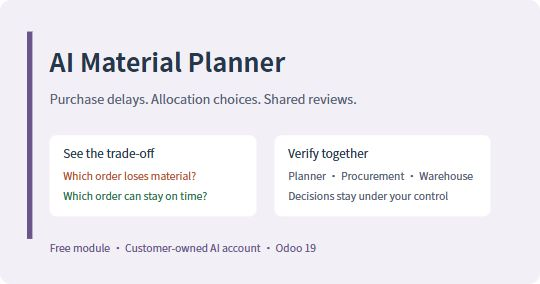
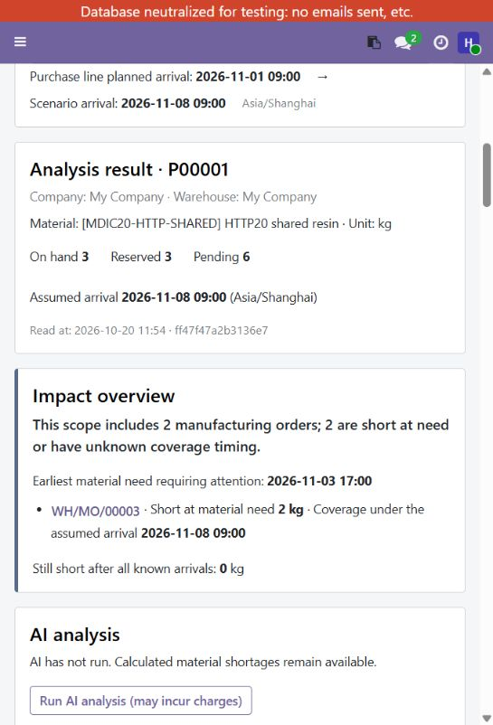
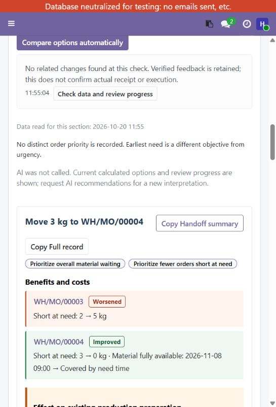

<section class="container"><div class="row"><div class="col-12"><h1>AI Material Planner</h1><p>When a purchase receipt slips, understand the material impact and compare the trade-offs before changing allocations.</p>
<p><strong>Free module for Odoo 19. Optional AI uses your own provider account and is billed separately.</strong></p>
<h2>What you can do</h2><ul><li>Compare planned and assumed receipt dates for the unreceived material.</li><li>Separate shortage at need time from quantity still missing after all known receipts.</li><li>Compare bounded allocation candidates: total material waiting, affected orders, and recorded urgency where available.</li><li>See the orders that improve and the orders that become worse.</li><li>Assign independent verification targets to procurement, warehouse and planning/production colleagues.</li><li>Keep feedback, decisions and short/full handoffs together. Detect changed facts before relying on an old shared plan.</li></ul>
<h2>One shared decision</h2><p>The planner compares the options. Procurement confirms quantities and dates. Warehouse confirms physical stock and reservation release. Completing a verification does not mean the plan is adopted; recording a decision does not move stock.</p>
<h2>Optional AI and data</h2><p>AI explains selected scenario evidence and candidate trade-offs. Enable AI data sharing on the page before invoking an AI action. The selected provider receives material/document names, quantities, stock/reservations, incoming supply, manufacturing needs, dates and calculation evidence. Prices, contacts, business notes and the full database are excluded. Requests go directly from your Odoo server to DeepSeek or OpenAI. Connection tests and analysis can consume provider credit. No vendor AI subscription or activation key is required.</p>
<h2>Compatibility and scope</h2><p><strong>This release: Ubuntu 24.04, official Odoo 19 Docker, PostgreSQL 16, two HTTP workers with shared database and persistent data directory.</strong> Native Windows 11 / Odoo 19 / Python 3.12.3 (workers=0) has also passed install, upgrade, permission and encrypted-configuration checks. Odoo.sh has not been validated; Odoo Online is not supported. Dependencies: purchase_stock, mrp, web, requests and cryptography; Windows also needs pywin32. This store module uses normal Odoo add-on installation. Read the included installation guide for dependency and backup requirements.</p><p>This is material decision support, not full production scheduling. It does not model full operation capacity, lot/expiry constraints or quality release, and does not promise a global or monetary optimum. AI impact requests are bounded to 20 demands / 128 KB. AI prose still needs business review.</p>
<h2>Installation and support</h2><p>Install the module in a configured custom add-ons directory, satisfy dependencies and use Odoo Apps. No core patches are required. Start in staging and keep normal backups.</p><p><a href="installation.html">Installation guide</a> · <a href="quick-start.html">Three-role quick start</a> · <a href="privacy.html">Data and AI fees</a> · <a href="mailto:aa7266901@gmail.com">aa7266901@gmail.com</a></p>
<p>License: LGPL-3. Version 19.0.1.0.0.</p>
<h2>Actual Odoo 19 screenshots</h2><p>English UI in an isolated synthetic-data database, shown at a narrow viewport. Local calculation and allocation comparison do not require an AI call. Optional AI explanation is not shown in these captures.</p><div class="row"><div class="col-12 mb-4"></div><div class="col-12 mb-4"></div></div>
</div></div></section>